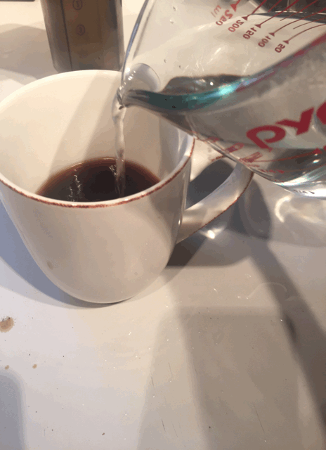

Information about coffee brewing and roasting.

Finishing an aeropress by diluting
Brewing coffee is a process whereby coffee oils and other solids are extracted from the beans and left in liquid, usually water. Getting good results is a delicate balance between grind size, water temperature, and time extracting.
All production methods require:
Generally, as grind size decreases, either water temperature or time extracting should also decrease to keep coffee quality the same. The two methods won't necessarily taste the same, but this helps explain why a french press (with coarsely ground coffee) takes 4 minutes while an aeropress only takes 1 minute.
The keys to making excellent coffee are:
| Brew Method | Pros | Cons |
|---|---|---|
| Drip Machine | Little manual effort, consistent, makes a lot | Can't improve the machine |
| French Press | Velvety texture, full flavor | A bit more cleanup, dependent on grind |
| Aeropress | Clean bright cup, easily tweaked, easy cleanup, quick | Needs paper filter, single cup |
| Moka Pot | Concentrated, can be very fruity | Finicky, somewhat difficult cleanup |